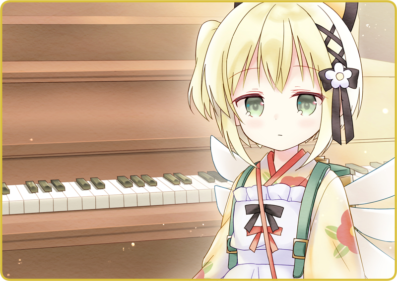
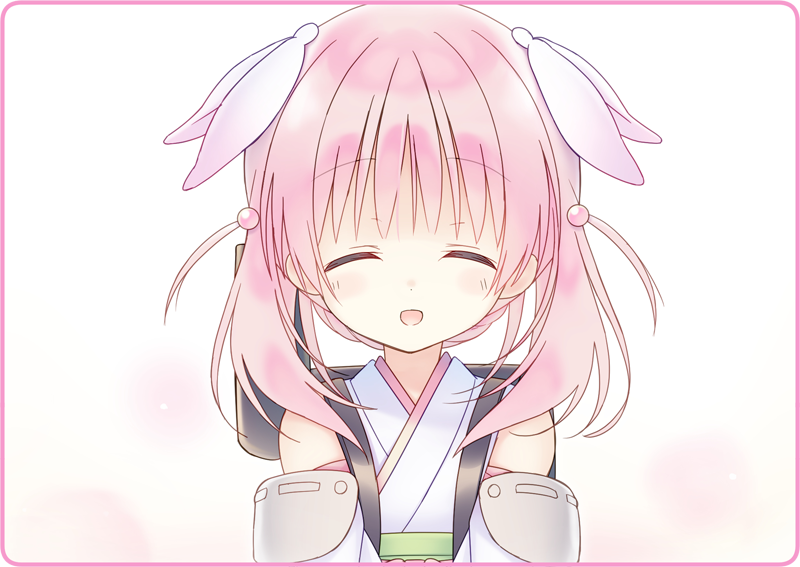

Bóng đèn dây tóc gắn trên chiếc đèn treo nhấp nháy liên tục.
Tôi đứng cạnh bên cửa sổ trông ra ngoài. Mặt Trời đã khuất núi từ lâu, và trên phố cũng chẳng còn ai qua lại nữa. Ánh sáng lờ mờ phát ra từ quán Mèo Đen như thể chìm vào trong màn đêm thông qua khung cửa kính ghép màu. Thời kỳ quản chế ánh sáng đã kết thúc từ lâu, nhưng mọi người vẫn nhanh tay tắt đèn nhà mình đi, cơ hồ hãy còn chịu ảnh hưởng bởi tàn dư của một thời quá vãng. Đèn đường ngoài kia chỉ lác đác vài cái, và thứ duy nhất chúng ta có thể nhờ cậy là ánh sáng do vầng trăng kia rọi xuống.
Tôi đang quét các loại đồ nội thất của quán, đồng thời tỉ mẩn lau dọn những chỗ bụi rơi xuống. Chiếc máy phát nhạc là thứ đặc biệt dễ bị dính bẩn, hẳn là vì nó chứa tĩnh điện. Hôm nay nhờ nó mà quán mới có bầu không khí tốt như vậy, có lẽ tôi nên dồn thêm chút công sức nữa.
Tôi tạm nghỉ rồi vươn vai một cái. Vô thức nhìn sang bên, chiếc piano đứng với đường vân gỗ sáng bóng đẹp đẽ lọt vào tầm mắt. Không hiểu sao tôi lại lật nắp lên và nghía vào xem những phím đàn. Khi nhấn vào một phím, chiếc đàn phát ra thứ thanh âm cứng cáp, gợi tôi nhớ về những buổi đêm lạnh lẽo. Hình như bà chủ cũ của tôi thường xuyên chơi thứ này. Tôi quên mất không hỏi bà ấy hay chơi bài gì mất rồi. Coi bộ là một bài hát của Lobelia; tôi còn nhớ bà ấy từng trải lòng rằng vì là thời chiến nên không dám chơi thì phải…
Một giọng nói cộc lốc vang lên. Đó là Gekka đang rửa cái gầu hót rác.
“Xin lỗi, không phải tôi đang trốn việc hay gì…”
Vẫn trơ lì cảm xúc như mọi khi, Gekka tiếp tục bắt tay vào dọn dẹp, âm thầm và từ tốn.
“Này, Gekka biết chơi piano không?”
“Cũng đúng… liệu có ai chơi được không nhỉ?”
“Tôi vừa nói chuyện với Karasuba-san ấy mà.”
Rằng nên tận dụng chiếc piano để kéo thêm khách hàng tới quán. Rằng nếu các Hình nhân cũng biểu diễn chút gì đó thì hay phải biết. Tôi lặp lại y chang những gì từng nói với Karasuba-san cho cô bé.
“Biết là thế, nhưng biểu diễn nhạc sống nó phải khác chứ.”

Gekka nhìn tôi chằm chằm.
Một câu hỏi thật đơn giản, như thể đang hỏi về một bí ẩn không thể giải đáp.
Otome: “Gekka, em quét dọn xong chưa?”
Chị chủ Okunomiya-san bước từ trên lầu xuống.
Otome: “Đúng lúc quá nhỉ.”
“Em xin lỗi, bên này vẫn chưa xong ạ…”
Otome: “Sao thế, vẫn chưa quen việc à? Gekka, đi phụ việc cho Karasuba đi.”
Tầm giờ này Karasuba-san có lẽ đang xử lý sổ sách và kiểm tra lưu kho. Gekka duỗi thẳng lưng, nện nhẹ gót giày và rời sảnh với cây chổi và gầu hót rác.
“Thưa, Thiếu tá Okunomiya.”
Otome: “Em không định bỏ cái [Thiếu tá] đi à?”
“Em xin lỗi, thói quen thôi ạ… Chị có quen ai biết chơi piano không ạ?”
Otome: “Có tôi biết đây.”
“Hở?!”
Otome: “Làm gì mà ngạc nhiên thế?”
“À không, lỗi em. Vậy là Okunomiya-san biết chơi piano…”
Tay chân mảnh dẻ. Bờ vai rộng. Hồi còn là quân nhân, ắt hẳn chị ấy tựa như giai nhân bước từ tranh ra. Dù rằng trong quân đội đàn ông chiếm ưu thế, vậy mà chị ấy vẫn được trọng dụng đến vậy. Không khó để tưởng tượng ra cảnh dàn binh sĩ đột ngột căng như dây đàn trước lời hiệu triệu đầy uy lực của chị.
“... thế mà chị lại ra dáng tiểu thư bất ngờ nhỉ.”
Otome: “Cười cái gì?”
“E-Em không có ý đó mà…”
Thoắt một cái, cơ mặt tôi căng hết lại.
Okunomiya-san đảo mắt, chừng như hơi lúng túng.
Otome: “Đến tôi cũng từng có một thời làm hoa thùng nguyệt thẹn chứ…”
Chị vội quay mặt đi và theo chân Gekka.
Phải nhân cơ hội nào đó bắt chị ấy thể hiện mới được, tôi nhủ thầm.
Chuông cửa vang lên, Haizakura đã trở lại.
“Đám chó hoang có lởn vởn ngoài đấy không em?”
“Biết ngay…”
“Thật luôn?”
Nó hiểu được những gì Haizakura nói thật sao…?
Cũng có thể là nó nhận ra không còn đồ ăn thừa nữa bằng mùi.
“Làm màu thôi. Vì đằng nào quán mình cũng có một cái rồi.”
Tôi lướt tay qua những phím đàn.
“Thế à?”
“Haizakura thích âm nhạc lắm phải không?”
“Thế thì, đây.”
Tôi nhấn phím trắng cuối cùng.
Âm sắc trong trẻo vang vọng khắp khu sảnh rộng lớn.
“Hay em thử hát gì đó xem?”
Cơ hồ bị bất ngờ bởi từ ngữ đó, trong một khắc trông em ngạc nhiên không nói nên lời.
Sau đó, em làm điệu bộ như đang trầm tư.
Đoạn, em hướng đôi mắt màu lưu ly kia về phía tôi mà nói thật rành mạch.
“... do em bị hỏng sao?”
“Nếu vậy thì hát mà không cần nhạc đệm thì sao?”
Tóm lại, có khác gì mù nhạc tột độ đâu.
“Thế, em không thể sửa được à?”
Em khẽ lắc đầu, kéo những lọn tóc màu anh đào kia đung đưa theo.
“Mất trí nhớ?”
Em nhảy lên và chỉ ngón trỏ vào tôi.
Haizakura không cố ý khiến tôi phải buồn, thế mà ngực tôi vẫn thắt lại.
“Có cách để chữa chứng mất trí nhớ đấy.”
“Thế nên… có lẽ Haizakura cũng có thể sửa được không chừng.”
“Cùng nhau đi tìm nhé, nguyên do mà Haizakura được sinh ra ấy.”
Tôi đề xuất với cô bé
Hình nhân Tự hành trước mặt mình như vậy.
“Tôi muốn được nghe Haizakura hát lắm đấy.”
Đôi mắt em tròn xoe lại, ánh lên vẻ ngỡ ngàng, và rồi, vẫn với nụ cười ấy…

Em gật đầu với tôi.

 “Em quét dọn ngoài sân xong rồi ạ!”
“Em quét dọn ngoài sân xong rồi ạ!”